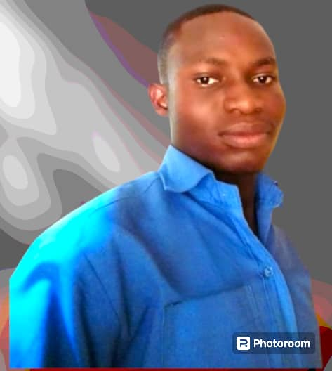

AMEMAWU ERIC| WDD 130
Hello my name is Amemawu Eric and I'm from Volta Region, Ghana. I enjoy watching movies and documentaries I am deeply passionate about the intersection of technology and art. With a background in graphic design and a strong affinity for digital innovation, I thrive in the dynamic realm of visual storytelling. My profession allows me to weave together elements of creativity and technical expertise, bringing ideas to life through captivating visuals and innovative design solutions. Beyond my work, I find joy in exploring the boundless realms of photography, capturing moments that evoke emotion and spark imagination. In my leisure time, I relish the tranquility of nature, often venturing into the great outdoors to hike, camp, and immerse myself in the beauty of the natural world. I am an avid reader, drawn to the enchanting worlds of fantasy and science fiction, where imagination knows no bounds. Additionally, I find solace in the melodies of music, fueling my soul with the harmonious symphonies of classical compositions. My diverse interests and unwavering curiosity fuel my desire to embrace the multifaceted tapestry of life, constantly seeking new adventures and creative inspirations.